Maipú · Av. Segunda Transversal 3612
La obra no para el domingo.
Materiales de construcción, abierto los siete días.
- 337reseñas en Google
- 4,6de nota promedio
- 7días abierto a la semana
- 0páginas propias en su ficha
Antes de llamar
La lista del maestro
Con esto anotado, la cotización sale en una llamada.
- LA OBRA
Qué se construye
Radier, muro, cerco o ampliación.
- LAS MEDIDAS
Metros de la obra
Largo, ancho y alto.
- LOS MATERIALES
La lista del proyecto
Cemento, áridos, fierro, tableros.
- LA ENTREGA
Retiro o despacho
Y la dirección de la obra.
Las cantidades las define el proyecto; el despacho lo confirma el local.
El material a tiempo es la obra a tiempo.
En Segunda Transversal 3612
El local, por horario
-
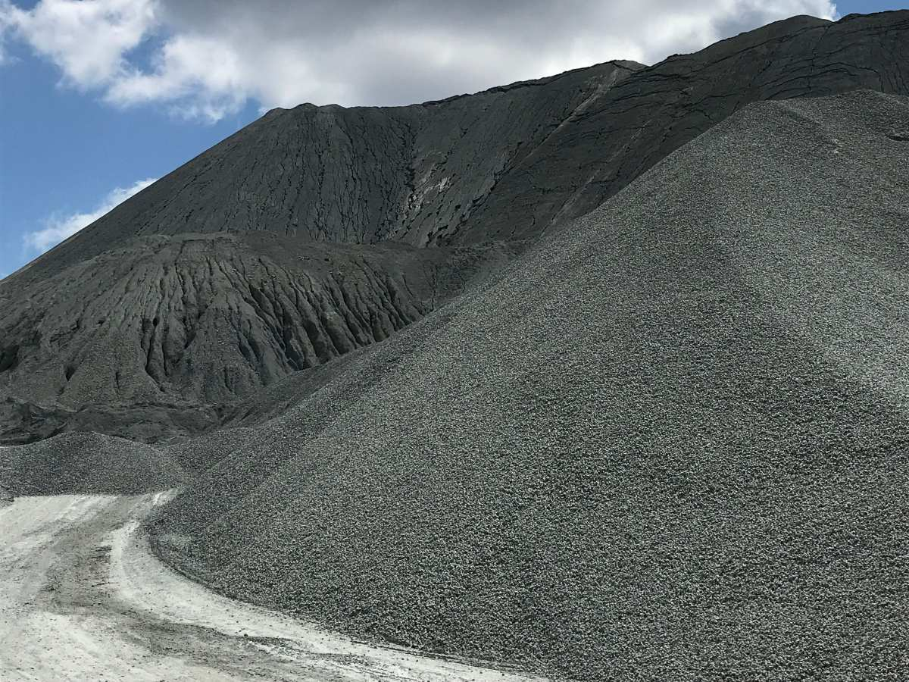
Lo que la distingue
Abre el domingo
De 9 a 14:30.
-

Lunes a viernes
Mañana
De 9 a 14:30.
-
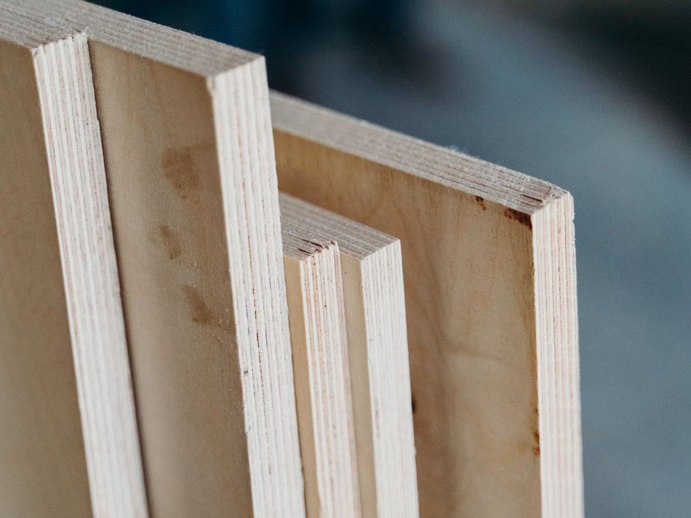
Lunes a viernes
Tarde
De 15:30 a 19:30.
-
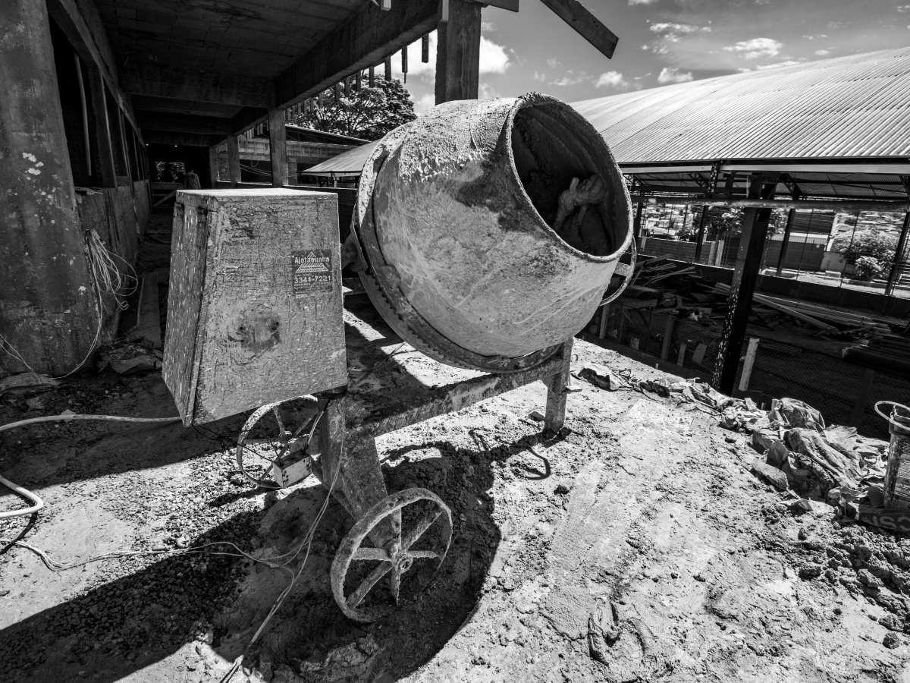
El sábado
De corrido
De 9 a 18.
-
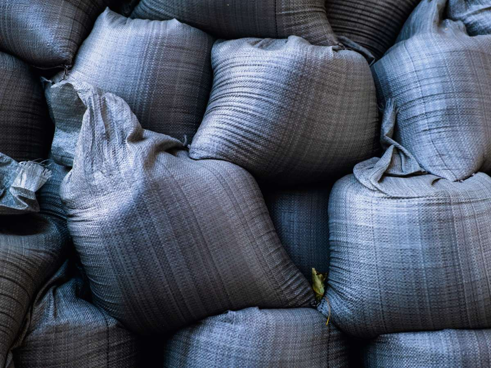
Para la obra
Materiales
De construcción.
-
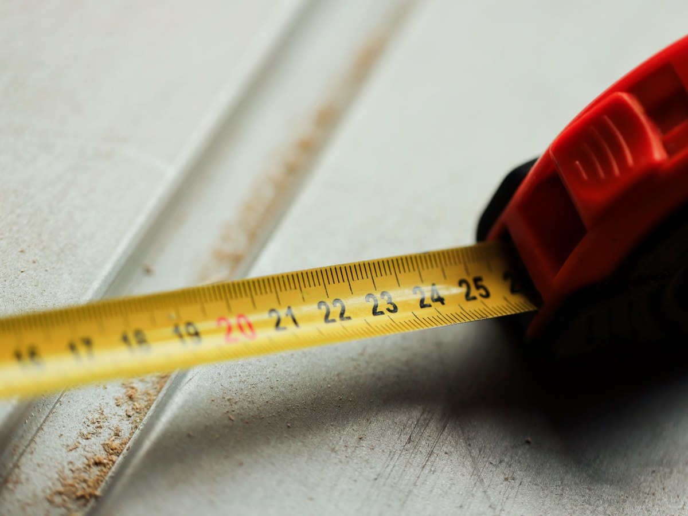
Antes de ir
Por teléfono
(2) 2746 5552.
Horario de guías en línea; razón social Ferretería Segunda Transversal Ltda.
337 reseñas y un 4,6.
Av. Segunda Transversal 3612, Maipú
Saco, árido y malla
Un día en la obra
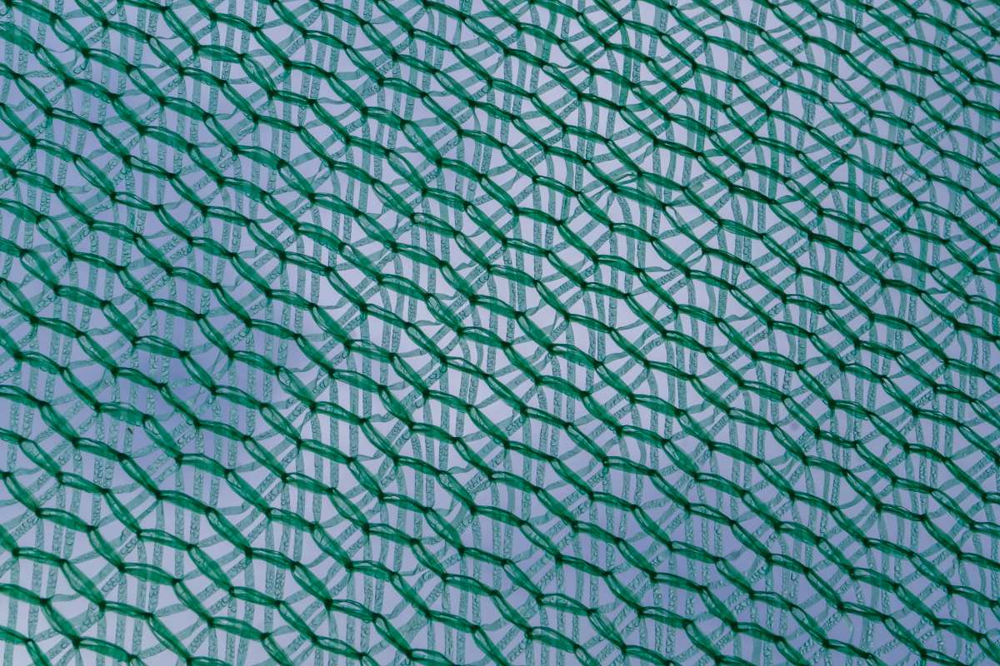
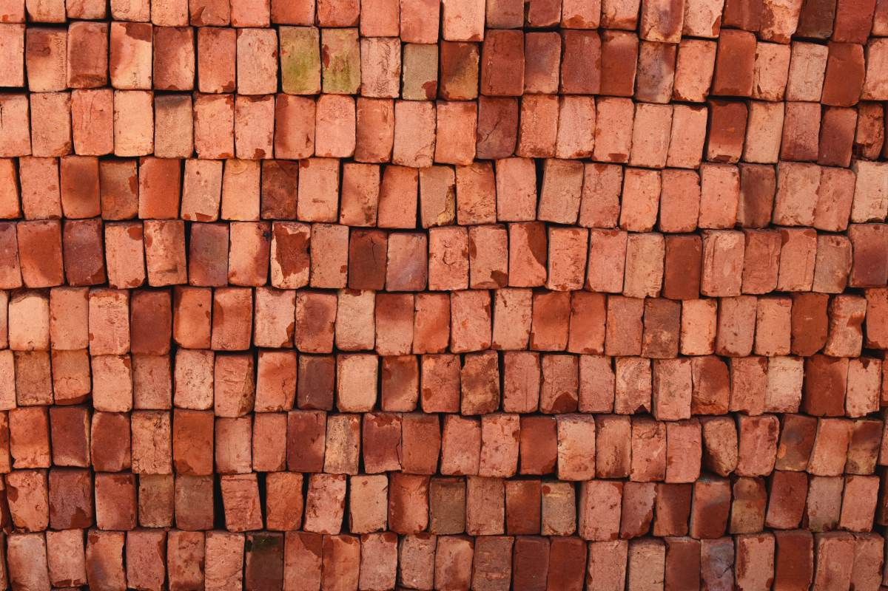
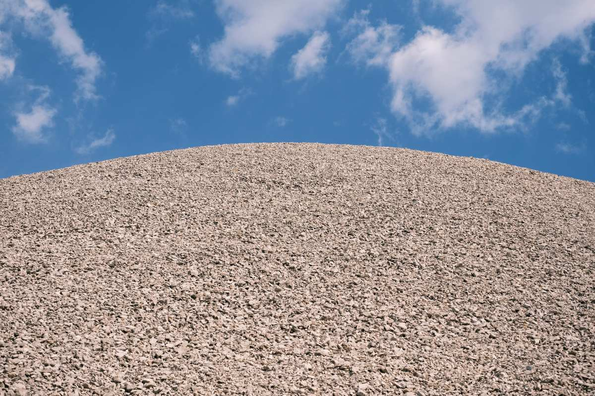
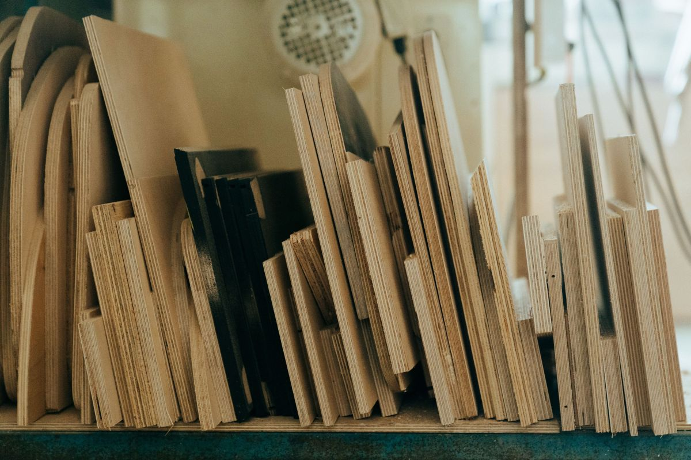
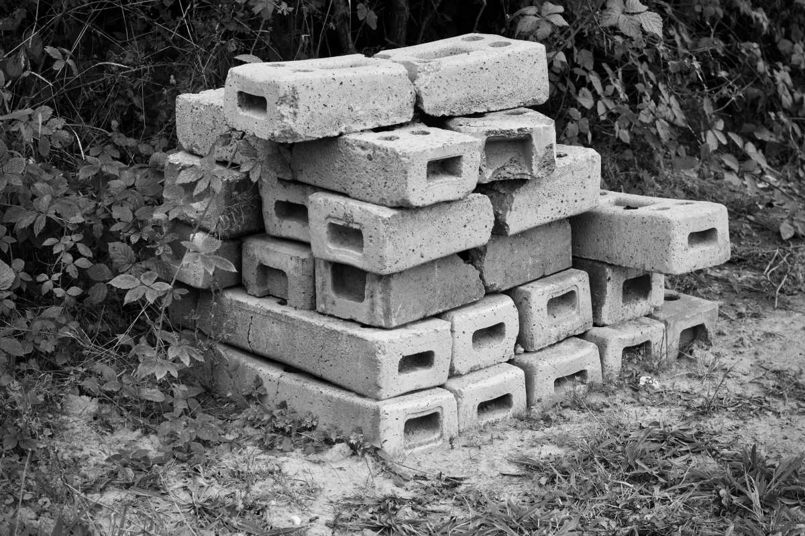
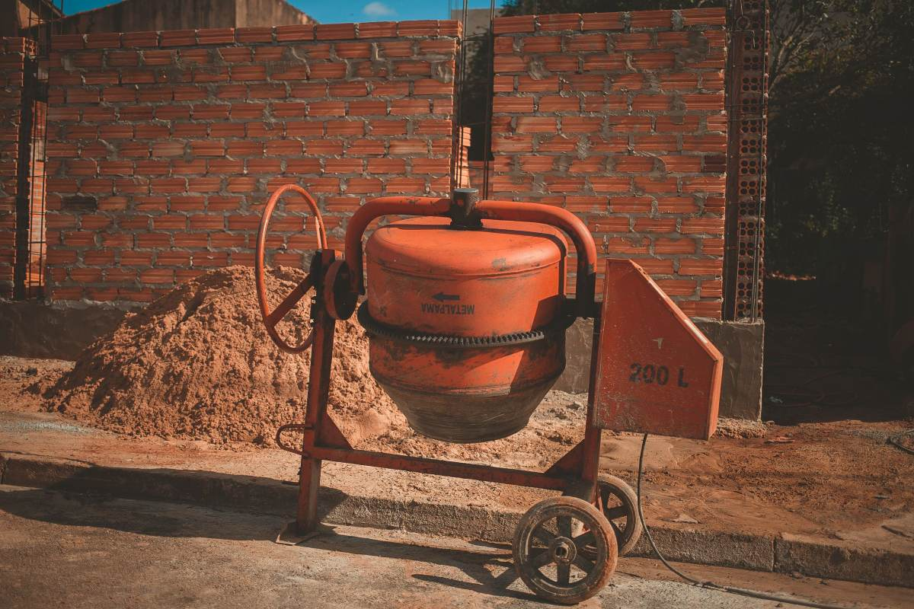
Fotos de referencia: ninguna es del local.
Dónde estamos
Segunda Transversal 3612, Maipú
- Lunes a viernes
- 9–14:30 y 15:30–19:30
- Sábado
- 9–18
- Domingo
- 9–14:30
- Teléfono
- (2) 2746 5552
No confundir con la ferretería del 1470 de la misma avenida: otro local, otro teléfono.
Av. Segunda Transversal 3612 Abrir en Google Maps
Para el dueño
Qué es real y qué falta
Lo verificado
Dirección, teléfono, horario de guías, la razón social y las 337 reseñas con 4,6.
Lo de ejemplo
La lista del maestro y las fotos.
Lo que falta
Qué materiales tienen, si despachan a obra y un celular con WhatsApp.